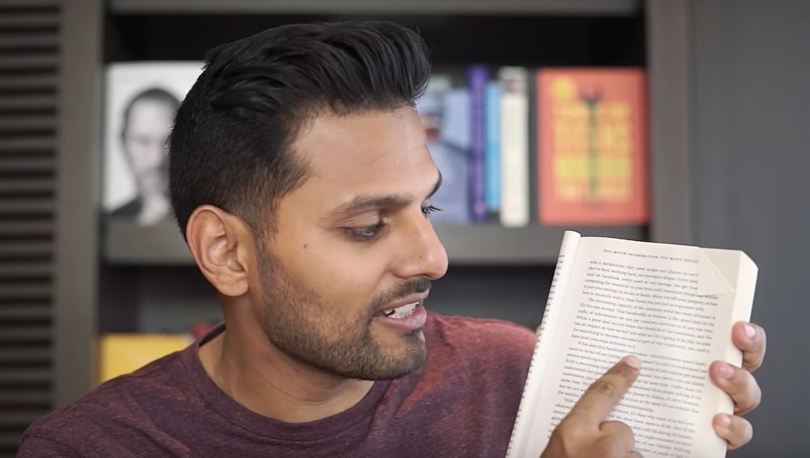
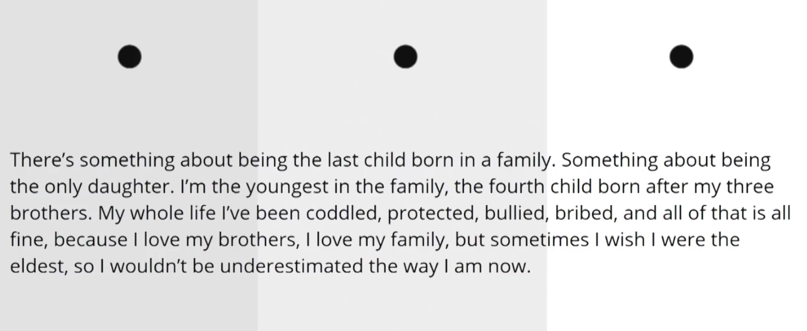

Vi har lavet en Step-by-step guide til at hjælpe dig med at læse bedre og mere effektivt!
Følg denne guide fra start til slut.
1. Som det aller første, rådes du til at læse bogens front- og backcover, så får du en kontekst om hvad bogen handler om.. Derefter find og se en Youtube video f.eks. i form af en Ted-talk om den bog/emne/forfatter du gerne vil gå i dybden med, så fanger du essensen af bogen og hvad forfatteren gerne vil fortælle og personens budskab. Når du har gjort dette sætter du dig selv op for en rigtig god læseoplevelse..
2. Derefter highlight de kapitler og områder i bogen du tænker er ekstra spændende for
dig, som du gerne vil fokusere på. Man siger at 80% af en bogs værdi, kan blive fundet i 20% af siderne
i bogen.. Så det handler altså om at man virkelig fokusere på de kapitaler der kan tilføje
ekstra værdi for dig! Man kan sammenligne det med en handle/shoppingtur for dagligvarer i et supermarked, når du skal finde dine varer, behøver du ikke gå igennem hele butikken og kigge på alle hylder, for at finde hvad du leder efter.. Nej du kigger på din indkøbsliste og opsøger netop de varer.
Vi mener at det er væsentlig vigtigere at få noget
ud af en bog, end at skulle afslutte den cover-to-cover!
Det bringer os videre til næste punkt!
3. Hvis den bog du læser ikke interessere dig overhovedet, så lad vær med at kæmp dig
igennem den. Find hellere den næste bog du er mere passioneret omkring. Det er yderst vigtigt at være inspireret og passioneret omkring den bog du begive dig ud i.
Så hvis du ikke
er inspireret af en bog, så drop den hellere med det samme! Tag i stedet og fokuser din
energi derhen hvor du ved noget tænder dig!
Som sagt det at få noget ud af en bog og rent faktisk lære noget, er væsentligt vigtigere end at kunne sige hvor mange bøger man har læst.
En lille guide til Speed reading - Nu har vi kigget på de ting, der skal gøres inden vi begynder på at læse.. Nu kan vi kigge på tricks som kan gøre vores læsehastighed hurtigere.
1. Når du har fundet de kapitler der bringer dig værdi, som du gerne vil læse begynder ”skim” fasen. Man kalder det faktisk 'pre-reading'. Her vil du bruge 10 sekunder per side. Man kigger efter nøgle underoverskrifter, Statistik Key-points mm. Dette føles måske underligt, men det vil give dig et hurtigt overblik over hvad der er vigtigt på de enkelte sider.
2. Scanning fasen. Her vil du bruge 30 sekunder pr. side, nu gå tilbage til de underoverskrifter der fangede din opmærksomhed. Kig efter nøgleordende og læs dem igennem og fang essensen af dem. Der som der sker er at du faktisk har gået igennem det hele 2 gange nu. Det betyder at du bliver tryg med indholdet og når du så når til det sidste stadie, selve 'speedreadingen' vil du ikke kun kunne læse hurtigere, men din forståelse for indholdet vil også være meget større og bedre. Netop fordi du allerede har gennemgået det og har en god idé om hvad der kommer.
3. Sidste stadie - Speedreading - Man arbejder med en håndfuld forskellige visuelle guides og værktøjer/tips, som eksempelvis fingermetoden(du kan også bruge en blyant, eller hvad du nu har). En metode du decideret kan læse hurtigere på er ved at bruge den gode gamle, men i den grad effektive finger-på-bogen-metode. Her kan du med fingeren få din læsehastighed op med x2 x3 x4 alt afhængig af hvor hurtig du bevæger fingeren.. Og det virker faktisk- Prøv det!
4. Der er en håndfuld andre speedreading teknikker såsom Gliding, Bouncing og andre Visual aids som også
kan være rigtige gode.
Man bruger disse metoder for at sætte gang i det man kalder sit perifere syn, så man undgår at hoppe over hvert ord. Vi har nemlig en tendens når vi læser til at fixere på de enkelte ord, altså læse et ord af gangen i stedet for a kunne se på flere af gangen. Og det holder os tilbage.. Vi kan arbejde med vores perifere syn ved f.eks. at sætte fingeren på siden og følge den mens vi læser. Når vi kigger på en side kan vi godt opfange simple ord, som og,det,nej,okay mm. uden nødvendigvis at skulle læse dem. Finger-metoden og Bouncing-metoden er illustreret nedenfor.
Ved Brug af Bouncing-metoden vil du segmentere siden i 3 kolonner, og så vil du hoppe fra det midterste ord i den første kolonne, over til den anden kolonne og til den tredje. Her vil du automatisk bruge dit perifere syn til at læse alle ordene på hver side af hver kolonne. Det kræver lidt øvelse, men det er ikke desto mindre super effektivt! Og på den måde kan du få mere ud af din læsning.
Dette var vores lille guide til dig der gerne vil have et lidt bedre tag på hvordan du kan læse bedre. Så ved at følge denne guide bør du både kunne lære at læse hurtigere og vigtigst af alt bedre forstå hvad du læser!

